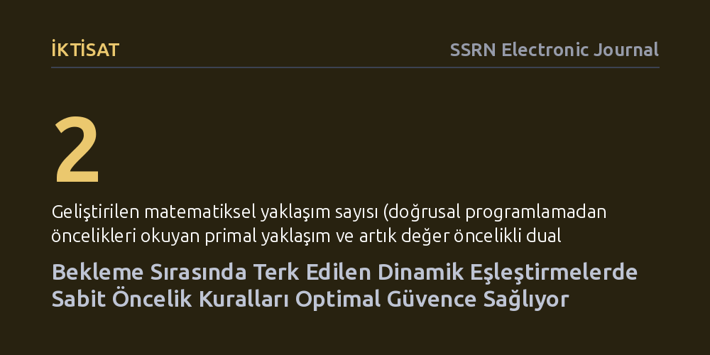

IKTISAT · SSRN Electronic Journal · 2026-10-13
Araştırmacılar, tarafların eşleşmeyi beklemeden ayrılabildiği dinamik pazarlarda karmaşık anlık hesaplar yerine sabit öncelik kurallarının yeterli olup olmadığını inceledi. Doğrusal programlama modelleriyle, önceden belirlenen statik öncelik kurallarının da en iyi kuramsal performansı güvence altına alabildiği kanıtlandı.
Hızlı değişen eşleştirme sistemlerini verimli yönetmek için her an karmaşık hesaplar yapmaya gerek olmadığını, iyi kurgulanmış sabit kuralların da en yüksek performansı koruyabileceğini gösterir.

Gündelik hayatımızda iki tarafı bir araya getiren pek çok sistem dinamik olarak işler. Organ nakli bekleme listelerinden çağrı merkezlerine, yolcu ve sürücüleri buluşturan taşımacılık uygulamalarından çevrim içi iş platformlarına kadar pek çok yapıda kaynaklar ve talepler sürekli sisteme girer ve çıkar. Ancak bu sistemlerin en kritik sorunlarından biri bekleme süresidir. Katılımcılar sonsuza dek sırada bekleyemez; yeterince hızlı bir eşleşme sağlanamadığında sabırları tükenir ve sistemi terk ederler.
Bu durum pazar tasarımı yapanlar için ciddi bir ikilem yaratır: Bir talebi hemen eldeki ilk seçenekle mi eşleştirmeli, yoksa daha iyi bir eşleşme ihtimali için bekletmeli mi? Bekletmek daha kaliteli bir uyum sağlayabilir ama aynı zamanda tarafların vazgeçip sistemi terk etmesi riskini doğurur. Pazar tasarımında asıl soru, böylesi belirsiz bir ortamda sistemi her an sıfırdan yeniden optimize etmeden de en yüksek toplam faydayı güvenceye almanın mümkün olup olmadığıdır.
Araştırmacılar bu soruya yanıt ararken saha deneyi ya da simülasyon yerine saf matematiksel modelleme ve yöneylem araştırması araçlarına başvurdu. Eşleştirme süreçlerinde hangi tip aktörün ne zaman sırada bulunacağını kestirmek zordur; çünkü sistemden ayrılmalar rastlantısaldır. Yazarlar, öncelikle belirli aktör tiplerinin herhangi bir anda sistemde mevcut bulunma olasılığına dair yeni bir stokastik alt sınır hesapladı. Bu alt sınır, sistemdeki belirsizliğin en kötü senaryoda bile matematiksel olarak nasıl kontrol altında tutulabileceğini gösterdi.
Bu olasılık zeminine dayanarak iki farklı matematiksel yöntem inşa edildi. İlk yol olan 'primal yaklaşım', özgün bir doğrusal programlama modelinin optimal çözümünü inceleyerek kimin kime öncelik vereceğini doğrudan çıkardı. İkinci yol olan 'dual yaklaşım' ise doğrusal programlama ikiliğine dayanarak her aktör tipine bir gölge değer biçti ve eşleşmelerden doğan 'artık değeri' (elde edilen kazanç ile tarafların değerleri arasındaki farkı) en yüksek olanlara öncelik tanıdı.
Analizin sonucunda, sürekli durum değiştiren dinamik ortamlarda bile önceden belirlenmiş sabit öncelik kurallarının en iyi teorik performansı garanti edebildiği gösterildi. Sistemin her adımında anlık, karmaşık ve yüksek hesaplama gücü gerektiren kararlar almak yerine; aktör tiplerine sabit öncelikler atayarak en yüksek kuramsal verime ulaşılabileceği ispatlandı.
Dahası, geliştirilen iki farklı yöntemin birbirine sıkı sıkıya bağlı olduğu belirlendi. Dual yaklaşımda kullanılan aktör değerlerinin, doğrusal programlama ikiliğinden türetilen bir sabit nokta denkleminin tekil çözümü olduğu kanıtlandı. Yani farklı matematiksel açılardan bakıldığında dahi, önceliklerin ve değerlerin aynı kuramsal omurgada birleştiği doğrulandı.
Bu bulgu, algoritmik kaynak dağıtımında 'basit ve anlaşılır kuralların' gücünü yeniden hatırlatıyor. Gerçek hayatta kullanıcılar, arkasında hangi karmaşık yapay zeka kararının yattığını anlayamadıkları kara kutu sistemler yerine, şeffaf ve sabit öncelik kurallarıyla çalışan sistemlere daha çok güvenir. Sabit önceliklerin verimlilikten ödün vermeden en iyi garantileri sunabilmesi, hem adalet hem de operasyonel kolaylık açısından önemlidir.
Yine de bu sonucun kuramsal bir matematiksel çerçeve olduğunu unutmamak gerekir. Çalışma, aktörlerin ayrılma davranışlarının belirli kuramsal varsayımlara uyduğunu kabul eder. Gerçek dünya pazarlarında insanların öngörülemez psikolojik tepkileri, ani talep şokları veya eksik bilgi koşulları altında bu sabit kuralların ne kadar dayanıklı kalacağı ancak ampirik testlerle netleşebilecektir.